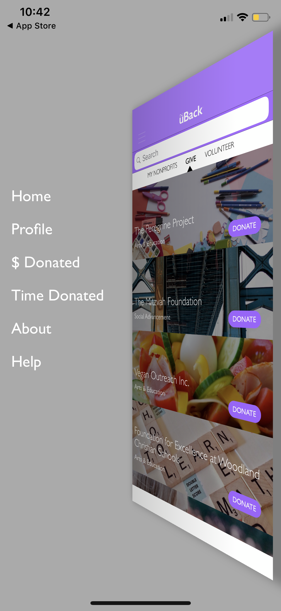
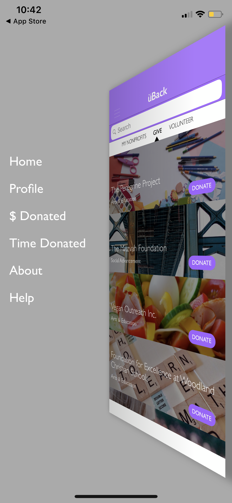

Comparative Analysis
Facebook Fundraiser
In recent years, Facebook created Facebook Fundraiser. This program is accessed within Facebook, which has already developed to be the largest social network. This allows the Fundraiser to take advantage of the platform to encourage donations within social circles and communities.
Facebook Fundraiser has various categories of areas you can donate to. It displays an all-encompassing and thorough list that is easy to navigation. In addition, the page shows the current popular fundraisers at the moment to show other people giving back. When creating a fundraising project, users are able to not only select the cause (money for friend, organization, or personal cause), but they can also decide the end date of the fundraiser and the money goal amount. Facebook Fundraiser thus allows for a lot of customization for the users’ products.
This program is also effective because it ties in so well with social media. A lot of people check Facebook every day. Facebook sends notifications about fundraisers to friends, and thus this drives interaction and views for the cause. It also incorporates birthdays. Users often use their birthday to encourage donations to a cause, and this is an easy way of getting friends in your circle to give to your choice of charity.
The user interface of Facebook Fundraiser is kept pretty simple and similar to the Newsfeed. By going for a similar look, the page gives off a sense of familiarity--users do not need to readjust to a new interface design. It is also very easy to access the various categories of charities, or to sort the causes based on category.
Unlike uBack, Facebook Fundraiser only allows donating money, not time. However, the social aspect of the cause is extremely beneficial, and uBack does not have that. As humans, we are easily influenced by our friends and the people around us. Therefore, having their opinions and seeing their actions can encourage us to donate. Facebook successfully incorporated social networking in giving back to the community.
 
